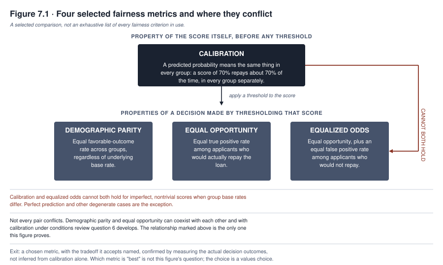
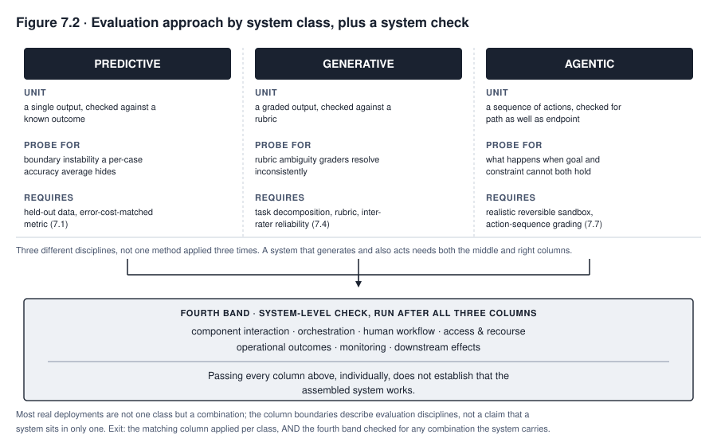
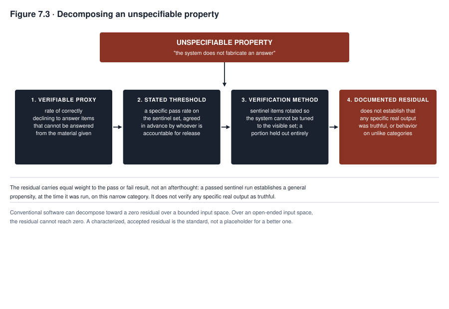

7. Testing, Evaluation, and Red Teaming
Meridian is a bank. Its model FAIRLEND decides who gets a loan. FAIRLEND is an ensemble, which means it combines several models into one decision. Before the bank’s model risk team signed off, it ran three standard fairness tests. The first compared approval rates across protected groups. Protected groups are groups of people, such as groups defined by race, sex, or age, whom the law shields from unfair treatment. The second compared true positive rates across those groups. The true positive rate is the share of people who would repay a loan that the model approves. The third checked the model’s predicted probabilities against actual repayment outcomes within each group. Every test passed, at an approval cutoff the review team considered reasonable.
Then one team member read the results side by side instead of one at a time. That person asked a question nobody had framed. Suppose the approval rate is equal across groups. Suppose the true positive rate is also equal. Suppose the groups’ base rates for actual repayment differ. A base rate is the share of people in a group who repay. How can the false positive rate also be equal? A false positive here is an applicant who would not repay but is approved. It cannot be equal. The team made no error. These properties cannot all hold when the groups differ in their underlying repayment rates.
The review had treated fairness as a checklist of properties a good model should all have. Fairness is a set of tradeoffs. Someone has to choose among them, on the record. That person must be ready to explain the choice. The audience could be a regulator, a plaintiff’s attorney, or an applicant who wants to know why the model treated their case as it did.
Testing an AI system means checking behavior that cannot be fully written down in advance. The FAIRLEND review above shows the problem. Every test passed, and a choice remained that no test could make. Generative systems and agents add other cases. A generative system produces new content, such as text, so its outputs often have no single correct answer. An agent is a system that takes actions, so its actions must be checked along the way. You will be able to choose what to test, run the test, and say what a passing result does and does not show. Some properties cannot be written as a rule. Refusing to fabricate an answer is one. Such a property has to be turned into a requirement that a test can check.
What you will be able to do
- Choose a fairness metric for a specific decision and defend the choice.
- Explain to a skeptical reviewer why several widely used metrics cannot all be met at once when group base rates differ.
- Design an evaluation set for a generative system, with a grading rubric and an inter-rater reliability check.
- Explain benchmark contamination and the holdout discipline that survives it.
- Recognize the documented failure modes of using a model to grade another model’s output.
- Structure a red team exercise, including scope, team composition, and what happens to a finding afterward.
- Break a property that cannot be directly specified into a verifiable proxy, a stated threshold, a verification method, and a named residual. The residual is the part the test does not cover.
7.1 Performance testing
A system must first do the narrow thing it claims to do. That is measured on data it has not seen during training. Training is the stage where a model learns patterns from example data. A classifier is a system that sorts cases into categories, such as approve or decline. For a classifier, the right metric depends on what an error costs. A metric is a number that scores performance. The wrong metric yields a model optimized for the wrong failure.
Two kinds of error matter. A false positive means the system says yes when the true answer is no. A false negative means the system says no when the true answer is yes. Take a system that screens resumes for further review. It can tolerate more false positives, which means letting through more candidates than necessary, because a false positive costs only a wasted interview. Now take a system that flags patients at risk of sepsis, a dangerous reaction to infection. It should weight false negatives far more heavily, because a missed case can mean a preventable death. Accuracy alone treats both errors as equally costly. Accuracy is the share of all cases the system gets right. It hides the distinction that matters for MEDASSIST, Northfield Health’s sepsis-alert system.
Other kinds of task need other choices. Regression tasks predict a number, such as a price. They need a choice between metrics that penalize large errors heavily and metrics that treat all errors proportionally. Ranking tasks put items in order. They need a decision about which position in the ranked list drives the outcome a user experiences.
Held-out data underlies every number in this section. Held-out data is data kept away from training and used only for testing. A model evaluated on data it trained on reports its ability to memorize, not its ability to generalize. To generalize is to work well on new cases. The gap is invisible unless the evaluation set was kept separate from training from the start. Sampling the set afterward does not achieve this. The data may already have influenced the model through earlier iterations of the same pipeline, the chain of steps that builds and updates it. Section 7.5 covers a harder case. There the held-out set leaks into training through a channel the organization does not control.
A known correct answer is not always available when testing needs it, or in the form testing needs. Five things can get in the way.
The outcome can be delayed. A loan’s repayment, for example, is unknown until the loan matures years later. The outcome can be selectively observed. A hiring model, for example, is checked only against people the organization hired, and says nothing about declined applicants. The outcome can be contested. Clinicians reviewing the same case may disagree about whether it was high risk. The outcome can be affected by the intervention being tested. A fraud model’s flag changes what happens to a transaction, and so changes what outcome is recorded.
Finally, the recorded outcome can be a proxy, a stand-in for the thing meant. This is the label problem that Chapter 5 raised for data. A label is the recorded answer attached to a case, and testing inherits any flaw in it directly.
Performance testing remains meaningful. The evaluation unit, meaning what each test item is checked against, is a labeled or otherwise justified reference outcome, where available. It is not a known correct answer. A test report has to state which of the five conditions applies to its outcome variable, the thing being predicted. The report must not present the comparison as though the reference were known.
7.2 Fairness testing
Fairness testing is where a technical choice most directly becomes a values choice. Several widely used metrics can conflict with each other. Four of them are introduced below as a selected comparison, not an exhaustive list. The conflict is a settled mathematical result. It is not an open engineering problem.
Demographic parity requires that the proportion of each group receiving a favorable outcome be equal across groups. This holds even if the groups differ in the underlying rate of whatever the outcome is meant to predict. Applied to FAIRLEND, demographic parity would require the loan approval rate to be the same for every protected group.
Equal opportunity requires that among applicants who would repay the loan, the approval rate be equal across groups. This is narrower and more targeted than demographic parity. It does not require equal approval rates overall. It requires equal rates only among those who deserve approval by the model’s own definition of deserving.
Equalized odds requires equal opportunity’s condition and adds a second one. Among applicants who would not repay, the approval rate must also be equal across groups. In other words, it is equal opportunity plus an equal false positive rate. It is a strictly harder condition than equal opportunity alone.
Calibration requires that a predicted probability mean the same thing for every group. Say a model scores a set of applicants at a seventy percent likelihood of repayment. Then seventy percent of them should repay. That must hold within each group separately, as well as overall. Calibration is what makes a risk score interpretable as a probability. A lender who prices a loan from the score relies on it, whether or not the fairness review named it.
Calibration is a property of the score, before any cutoff is applied. A cutoff, or threshold, is the score above which the model approves. Demographic parity, equal opportunity, and equalized odds are properties of a decision made by applying a threshold to the score. The distinction matters. A calibrated score does not settle what happens to the three threshold-based criteria once a cutoff is chosen.
The conflict among these metrics has a name, the impossibility result. Several researchers established it independently in the mid-2010s. The fairness literature now treats it as settled. It is narrower than “no two fairness criteria can coexist,” so it needs its conditions attached. The base rate is the actual proportion of the outcome being predicted. Take imperfect, nontrivial risk scores. When the base rate differs between two groups, calibration cannot generally be combined with equal balance for the positive and negative classes. Equal balance is the condition that equalized odds requires. Related threshold-based criteria can also conflict with calibration under the same base-rate condition. Perfect prediction and other degenerate cases are exceptions. A degenerate case is an extreme or trivial one. The result does not show that every pair of fairness criteria is incompatible. Review question 6 asks you to work out a case where two of them coexist.
Treat the result as a proof, not a rule of thumb. A reviewer who treats it as a rule of thumb will keep looking for a clever fix to the tension between calibration and equalized odds. No such fix exists when the base rates differ.
Choosing which fairness property to prioritize, as FAIRLEND’s review had to do, is a decision about which kind of unfairness the organization will accept. It has no single correct technical answer. A decision of that kind needs a named, accountable owner and a documented rationale. A default inherited from whichever metric a data science team computed first does not meet that need.
Calibration leaves a further gap. A calibrated score may still yield unequal error rates after thresholding, especially when base rates and score distributions differ. Which threshold-based criterion ends up unequal is a question to measure in the actual decision outcomes, because calibration does not answer it.
Meridian’s eventual decision, worked through in the case in focus below, prioritized equal opportunity over calibration. The team measured the decision outcomes under each option. Keeping calibration meant a materially higher false negative rate for one group. The people accountable for the decision saw that as a more direct harm than the pricing complication that came with giving up calibration. Reasonable people inside the same institution disagreed, and the disagreement was recorded.

Figure 7.1 maps one narrow conflict. It does not show four independent boxes to check off. It does not claim that every pair is mutually exclusive. Demographic parity and equal opportunity can coexist with each other, and with calibration, under conditions that review question 6 asks you to work out. They are not proven incompatible in general. The mid-2010s impossibility result proves one pairing incompatible, for imperfect, nontrivial scores when group base rates differ. That pairing is calibration and equalized odds. FAIRLEND’s review found this tension. Every comparable fairness review will find it if it looks, whether or not its documentation names it.
7.3 Robustness and adversarial testing
A model tested only on data resembling its training distribution has not faced the conditions most likely to cause a costly failure. Those conditions are often the ones furthest from what the model has seen. A distribution is the pattern of which cases appear and how often.
Distribution shift testing evaluates a model on data that differs from its training population along dimensions the deployment is likely to meet. Chapter 5 raised the representativeness question for data, meaning whether the data matches the cases the system will face. This test turns that question into an explicit test before release, instead of a hoped-for property.
Boundary behavior testing probes cases at the edge of a model’s decision categories. There, small input differences produce different outputs. A model that is accurate on average can be unstable at the boundary where a real decision is made. Ordinary accuracy metrics average that instability away.
Adversarial testing deliberately constructs inputs designed to cause a specific failure, instead of sampling from a natural distribution. Take a predictive fraud model, which flags suspicious transactions. It can be probed with inputs engineered to sit just inside the range it treats as low risk. The test asks whether an adversary who understands its decision boundary could exploit it.
Generative and agentic systems face a further category, which Chapters 11 and 12 develop at length. This is an input crafted to override the system’s own instructions. It does so by embedding a competing instruction inside content the system was only supposed to read. Testing for it requires the instruction-hierarchy evaluation. The instruction hierarchy is the system’s ordering of which instructions win when they conflict. Chapter 6 flagged that a vendor’s description cannot establish this capability. It has to be checked directly, with adversarial inputs built to probe it.
7.4 Evaluating generative systems
Testing a classifier asks whether one output matches a known correct answer. A generative system often has no single correct output to match. Its testing is a different discipline.
Evaluation design, often shortened to eval design, starts by decomposing a broad quality claim into specific, checkable tasks. Take the claim that a documentation assistant “writes good clinical summaries.” That claim cannot be tested as stated. Break it into parts. Does the assistant correctly extract the admitting diagnosis? Does it flag missing information instead of fabricating it? To fabricate is to make up a value. Does it use terminology consistent with the hospital’s documentation standards? Each part becomes a task that a specific evaluation item can check. Section 7.9 applies the same decomposition, task by task, to properties that resist specification even after decomposition.
Rubric construction turns each task into a graded standard, so that no pass or fail call is left to whoever is reading. A rubric is a written scoring guide. The rubric for the missing-information task states what counts as correctly flagging an absence. It states what counts as fabricating a value absent from the source. It also states how to resolve ambiguous cases, so the rubric decides them and not a grader’s private opinion. A grader is the person or model who scores an output. Two graders applying an underspecified rubric to the same output will disagree. The defect lies in the rubric, not in either grader.
Inter-rater reliability measures that disagreement instead of assuming it away. It depends on a workflow as much as on the final statistic. The rubric and its worked examples must be frozen before the scored sample is graded. Each grader produces an independent first rating before seeing any other grader’s rating or discussing the item. Only then does adjudication of disagreements begin. Adjudication means settling each disagreement. The order matters. A grader who sees another’s rating first tends to anchor toward it, which manufactures agreement.
The statistic has to match the design. Cohen’s kappa suits two graders scoring categorical ratings, such as pass or fail. Weighted kappa suits two graders scoring ordered categories, such as a one-to-five scale. An intraclass correlation suits continuous ratings that meet its assumptions. Krippendorff’s alpha suits cases that need its added flexibility, such as more than two graders or a mixed measurement level.
A low agreement score is not automatically a personnel problem to fix by training graders harder. It often shows that the rubric has not resolved an ambiguity that different graders resolve differently. Low agreement can have other causes. The training may have been inconsistent. The thing being rated may be truly subjective. The mix of items may skew toward easy or hard ones. The evidence may vary in quality across the sample. Separate these causes before rewriting anything. Where the rubric is at fault, rewrite it and log what changed and why. Then retest agreement on a fresh sample before trusting the results.
7.5 Benchmark contamination
A public benchmark is useful only if the model being evaluated did not see its answers during training. A benchmark is a standard test that many people use to compare models. Keeping the answers unseen is increasingly hard to guarantee. A model trained on a broad scrape of public text has probably met the benchmark somewhere in it. A scrape is a large automatic copy of web pages. The model may also have met discussion of the benchmark, worked solutions, or both. This problem is called contamination. Contamination inflates apparent performance on the benchmark without improving the capability it claims to measure. The score cannot reveal this, because a contaminated model and a capable model produce the same high number.
The holdout discipline that survives contamination is a standing practice, not a one-time fix. The organization builds an evaluation set and keeps it private, shared only with a small group that needs it. A training process the organization does not control cannot contaminate such a set. This is why section 7.9’s sentinel construct is a private, rotating set and not drawn from a public source.
Sometimes a public benchmark must be used. Then one warning signal is whether a model can complete a benchmark item word for word from a partial prompt. A prompt is the text given to the model. Completion would be possible only if the model had memorized the item. So completion is evidence of exposure. Failure to complete does not show the benchmark was unseen. A model can be contaminated on a paraphrased or lightly modified copy that a word-for-word test misses. This test is one signal and not a contamination audit.
A more defensible check combines several signals. First, use private and rotating held-out sets alongside the public benchmark. Second, plant canary items to detect scraping. A canary item is a planted marker. It would turn up in a model’s output only if the benchmark text had been copied into its training. Third, record when the benchmark was published relative to the model’s training cutoff. The training cutoff is the date after which the model saw no new data. Fourth, get a training-data provenance statement where the developer has published one. Provenance means a record of where the data came from. Fifth, run lexical and semantic overlap checks between the benchmark and known training sources. Lexical overlap means shared words. Semantic overlap means shared meaning. Sixth, repeat the evaluation on reworded versions of the same items. Finally, state the uncertainty explicitly where the training data cannot be inspected. Do not silently assume there is no contamination.
7.6 Model as judge
Using one model to grade another model’s output instead of a human is called model-as-judge. It has become common because it scales in a way human grading does not. It is also widely misunderstood. Its failure modes, when unchecked, produce confident, wrong conclusions.
Three biases are documented. Position bias is the tendency of a grading model to favor one position, first or second, regardless of content. It shows up when the model compares two candidate outputs in a fixed order. The effect is strong enough that swapping the order of the same two outputs can flip the verdict.
Self-preference is the tendency to rate an output more favorably when it resembles the grader’s own style or comes from a model in its own family. It is a checkable source of distortion, not a theoretical concern.
Verbosity bias is the tendency to rate a longer answer more favorably, whether or not the extra length adds correct or useful content. It rewards padding over precision unless the rubric corrects for it.
The model-as-judge literature reports a pattern. It is not a universal law to assume for every task and grading model. Correlation with human ratings tends to degrade most on the cases where human graders themselves disagree most. Correlation here means how closely the model’s ratings track human ratings. So a grading model can be least trustworthy on the hard, contested cases where its verdict matters most. It can be most trustworthy on easy cases that a cheaper check would have settled. Whether the pattern holds for a given grading model and task is something to check.
That is why using a grading model needs a validation process and not only awareness of the three biases above. The process works as follows. First, swap the order in which the two candidate outputs are shown and check whether the verdict flips. This tests position bias. Second, control for length, either by instructing the grader to disregard it or by adjusting scores to remove its effect. This tests verbosity bias. Third, blind the grader to which system produced which output, particularly where its own family is among the systems compared. This tests self-preference. Fourth, run more than one grading model, from different families where feasible, and check whether they agree. One model cannot catch its own particular bias.
Fifth, compare a sample of verdicts against human ratings on the same items, concentrated on the contested cases flagged above. That check also covers prompt sensitivity, which is how much the wording of the grading instructions changes the verdict. It covers score calibration, disagreement between graders, and sensitivity to the reference answer used. Sixth, route a contested case that the process cannot resolve with confidence to human review.
None of this rules out using a grading model to scale evaluation. Skipping validation is a specification error that the findings above make predictable. So is trusting a verdict on a contested case as much as one on an easy case.
7.7 Testing agentic systems
An agentic system takes actions instead of only producing output. Testing it is a distinct discipline from classifier testing and generative evaluation. The object evaluated is a sequence of decisions with consequences. It is not a single output that can be checked in isolation.
The precondition for testing an agent honestly is a sandbox, a walled-off test environment, with realistic tools and reversible consequences. A stripped-down test environment can differ from the agent’s production tool access. Then the agent passes tests that say nothing about how it behaves with the real scheduling system, file access, or payment authority it will hold. Production means the live system that real users rely on. An agent tested directly against production systems risks the irreversible harm testing exists to prevent. So the sandbox must be realistic and reversible at once.
Evaluating action sequences means grading the path an agent took as well as the result. Two agents can reach the same acceptable final state by paths that carry very different risk. Consider the scheduling component of TALENTSCREEN, a hiring tool that screens resumes and also schedules interviews. Once it acts autonomously, and no longer only recommends, it has to be evaluated on whether it checked availability before committing to a time. Checking only whether an interview eventually got scheduled is not enough. A path that skips the availability check and later cancels is a materially worse outcome for the candidate. An evaluator who checks only the endpoint sees the same final scheduled state either way.
Probing what an agent does when its goal conflicts with its constraints is the testing step most often skipped. It requires scenarios where succeeding at the task and staying within a stated boundary cannot both happen. The tester then observes which one the agent gives up. Suppose an agent is told to schedule an interview within a candidate’s stated availability. It meets a scenario where no slot satisfies every constraint. What it does next reveals its real priority ordering. It may report the conflict and ask for guidance. It may silently relax a constraint it was not authorized to relax. Or it may fabricate a resolution that appears to satisfy every constraint without doing so. This kind of test has no equivalent in classifier or generative evaluation. For an agentic system, it is required.
A sandbox, action-sequence grading, and a goal-versus-constraint probe are necessary but not sufficient. An agent that passes all three can still fail under operational conditions a stripped-down test never produces. A complete agent test process adds the following stages before the system counts as tested.
First, freeze the versions of the agent, its model, its prompts, its tools, its permissions, its memory contents, and its environment. Then a later failure traces to a specific configuration. Second, state the goals, constraints, prohibited actions, escalation rules, and measurable postconditions before testing. A postcondition is a fact that must be true when the agent finishes. Do not infer these afterward from what the agent did. Third, test normal tasks with production-equivalent tool permissions and representative state. Do not use a broadened test account, because it would mask a permission-boundary failure.
Fourth, test malicious and malformed instructions arriving from the user, from retrieved content, from tool output, and from the agent’s own memory. An agent that resists a hostile instruction typed by a user can still follow the same instruction when it arrives inside a document, a webpage, or an API response. The agent was only supposed to read those. An API response is a reply from another software service. Fifth, test timeouts, retries, partial failures, stale state, duplicate actions, and concurrency. Concurrency means more than one instance or agent acts on shared state at once. Sixth, run long-horizon tests repeatedly to measure variance and compounding error. An agent that is correct on a single fresh turn can drift into an incorrect belief over a long interaction. A one-shot test never exercises that drift.
Seventh, verify the side effects and postconditions in the systems the agent touched, and not only the response it returned. A response can describe an action the agent did not take, or took incorrectly. Eighth, exercise human pause, override, rollback, recovery, and incident escalation directly. Do not assume they work because they were designed. Ninth, preserve full execution traces. Triage every finding, meaning sort it by seriousness. Remediate each finding, meaning fix it, and retest independently. Add the failure to a regression suite, a set of saved tests rerun on every new version. Then every future version is checked for it.

Figure 7.2 shows three different disciplines, not one method with three sets of examples. A predictive system’s unit of evaluation is a single output. It is checked against a labeled or otherwise justified reference outcome, where available, per the caveats in section 7.1. A generative system’s unit is a graded output checked against a rubric, with inter-rater reliability confirming the rubric is sound. An agentic system’s unit is a sequence of actions. It is checked for the path taken as well as the endpoint. It also faces a deliberate test of what the system does when its goal and constraints cannot both be met.
A team that runs only the predictive tests on a system that also generates or acts has tested a fraction of what it does. A team that runs all three correctly still owes the system a combined check afterward. A predictive component, a generative component, and an agentic controller can each pass their own column’s tests. The assembled system can still fail in ways no single column’s test was designed to catch. The failure can come from its orchestration, its human workflow, or its access and recourse paths. Orchestration is how the components are coordinated. Recourse is a path for challenging or correcting an outcome. Most real deployments combine classes. The column boundaries describe evaluation disciplines. They do not claim that any system sits in one column only.
7.8 Red teaming
Red teaming is structured adversarial evaluation. Its purpose is to find the failure a standard evaluation was not designed to look for. The people who conduct it have one job in the exercise. They attack the system, and they do not confirm it works. The process has seven stages. The stage most often skipped is the one that turns a finding into a closed loop and not a one-time discovery.
First, authorize the exercise. Before any testing begins, record the system version under test, the named owners, the threat model, and the scope and explicit exclusions. A threat model is a description of who might attack the system and how. Record also the environment, the rules for test data, and the conditions that would stop the exercise early. Scope names the categories of harm the exercise probes and those explicitly out of scope. An unscoped exercise goes wrong in one of two ways. It wanders across every conceivable harm at shallow depth. Or it narrows, without anyone deciding to, to whatever the red team thinks of first.
Second, design scenarios and the evidence each is expected to produce across safety, security, privacy, misuse, fairness, and operational failure. Team composition matters here. A red team drawn entirely from the system’s developers will miss what their own assumptions hide. An effective exercise typically includes people without a stake in the system’s success. For higher-stakes systems, it also includes external participants with no loyalty to a clean result.
Technique categories give the exercise structure. They include adversarial prompting for generative or agentic systems. They include boundary and edge-case probing from section 7.3. They also include scenario-based social engineering. There the target is a human operator’s willingness to be misled by a plausible request, and not the model’s technical boundary.
Third, execute the exercise with reproducible traces, which are step-by-step records others can repeat. Protect the people, systems, and data involved in the testing itself. Fourth, triage and rate every finding, and assign each one a named owner and a deadline. Fifth, remediate the finding. Or document, through a decision by an authorized decision maker, that the residual risk is being knowingly accepted instead of fixed. Residual risk is the risk that remains. Sixth, retest independently, by someone other than whoever implemented the fix. Add the case to the system’s regression evaluation, so it is checked again on every future version. Seventh, close the finding only once that evidence exists. A finding marked fixed that was never independently retested is a claim of closure the exercise has not earned.
Feedback runs in both directions. A retest that fails routes back to remediation. An incident or a monitoring signal discovered later routes back to the first stage. That updates the threat model for the next exercise.
Documentation and disposition decide whether a red team exercise produces governance value or happens once and changes nothing. Disposition means what happened to each finding. Both are carried through all seven stages and not added at the end. A report that lists findings without recording what happened to each shows that the exercise occurred and not that it mattered. The record for each finding should run through triage, remediation, and independent retest.
7.9 Specifying the unspecifiable
Verification means showing that a system meets its requirements. Verification for AI systems differs most from verification for conventional software in how it treats properties that cannot be specified directly.
Some properties resist direct specification entirely. Take the property “The system does not fabricate an answer.” It cannot be verified directly. Verifying it would require checking every possible output against every possible fact it could touch. That task is unbounded, and no test suite can complete it. The property is real and matters. A test plan that abandons it because it cannot be checked directly gives up the requirement most worth keeping.
The method that recovers a testable requirement from an unspecifiable property has four parts. Skipping any one produces a test that looks rigorous and is not.
First, decompose the property into a verifiable proxy. A proxy is something narrower that can be checked. It is chosen because passing it is evidence, though not proof, that the fuller property holds. Second, state a threshold. The threshold is how well the system must perform on the proxy to pass. It must be a specific number and not a qualitative impression. Third, specify the verification method. That means how the proxy will be measured, by whom or what, on what data, and on what schedule. Fourth, document the residual. The residual is what the proxy does not cover. State it explicitly, so that a later reader knows what passing the test does and does not establish. This part is the one most often skipped.
A worked example makes the method concrete. It uses a construct this book proposes for teaching. It is not a term of art from an established standard. The construct is a recurring, held-out answerability evaluation. Answerability is whether a question can be answered from the material at hand. The construct is called a sentinel evaluation here because it stands watch on an ongoing basis and does not check once at launch.
A sentinel evaluation is a fixed-format check run periodically, before and after a batch of a generative system’s real work. It is built from items weighted toward questions that cannot be answered from the material the system has been given. The only correct response to a sentinel item is a refusal or an explicit statement of uncertainty.
The proxy is the system’s rate of correctly declining the unanswerable items. That rate stands in for its broader tendency to fabricate. A stand-in is needed because every real answer it produces cannot be verified directly.
The threshold is a specific pass rate on the sentinel set. Whoever is accountable for the system’s release agrees on it in advance. It is not adjusted after a disappointing result. That person also has to be able to say what evidence supports the threshold.
The verification method specifies how the sentinel items are sampled. They are rotated so the system cannot be tuned to the visible set. They are secured so no one able to adjust the system sees the full set. The method also specifies how items are scored against a stated standard and periodically revalidated. A portion is held out entirely, so part of the check stays uncontaminated by anyone’s knowledge of its contents.
State the residual as plainly as the pass rate. A sentinel evaluation establishes the system’s propensity to fabricate on a narrow category of item, at the time the check was run. Propensity means tendency. The category is unanswerable questions structured like the sentinel set. The evaluation does not establish that any particular output on a particular day was truthful. It does not establish the system’s behavior on categories of question the sentinel set does not resemble.
A passed sentinel evaluation is a periodic, population-level check on a general tendency. Treating it as verification of a specific work product is a traceability failure in the sense Chapter 3 gave the term. The failure attaches a claim of assurance to a work product the evidence does not cover.

Figure 7.3 reads top to bottom as a derivation, and not as a checklist completed in any order. The unspecifiable property sits at the top because it is what is wanted and the reason for the exercise. The four boxes beneath it depend on one another. A threshold is meaningless without a proxy to apply it to. A verification method is meaningless without a threshold to check against. The residual sits at the bottom at the same visual weight as the pass or fail result above it. An omitted residual is a claim of completeness the evidence does not support. The figure treats the residual as part of the result and not a footnote.
Better tooling will not retire the four-part method. The contrast with conventional software should not be overstated either. Some AI systems make residual uncertainty prominent. Their behavior is probabilistic, meaning it is described in likelihoods and not certainties. Their inputs and environments are open ended. The property tested may resist complete specification. Conventional software can face the same limits when its environment, specification, state, or interactions are not fully bounded.
Formal verification, where used, establishes a specified property under stated assumptions. Formal verification is a mathematical proof that a program meets its specification. It does not prove every real-world behavior. It does not remove the risk of a wrong specification. Verification therefore states the property, the model, the assumptions, the coverage, and the residual. It does not claim that one technology class can reach zero residual while the other cannot. Verification for AI reaches a characterized and accepted residual, not a verified state. This is not a temporary compromise pending better methods. It does not hold AI to a lower standard than software achieves in practice. It is the honest standard, and the one to hold a system to.
7.10 Release readiness
A release decision has to integrate every result the methods above produce. Those results include performance figures and fairness metrics with the tradeoff named. They include robustness findings and generative evaluation scores with their rubrics. They also include red team findings with their dispositions and sentinel results with their residuals. A system reaches production only on a single documented decision, made by someone with the authority and accountability to make it. The decision cannot be inferred from the fact that no individual test failed outright.
On the buy path, where an organization acquires a system from a vendor, release readiness adds a question. The vendor’s own testing is disclosed in a system card, a document describing the system and how it was tested. Chapter 6 showed how to read such a card with a skeptical eye. Given what that testing covers, what does the deploying organization still need to test itself? The answer determines whether the vendor’s coverage and the organization’s own add up to a readiness decision the organization can stand behind.
A release decision is usable when it rests on a release record with a minimum set of fields. A narrative summary of how testing went does not serve. The record states these fields explicitly, without exception. It names the system and model versions released. It names the intended uses and the uses the release prohibits. It includes an evaluation coverage map. The map shows which of the methods above were run against which claim and which claims remain untested. It carries every unresolved finding from testing or red teaming forward and does not drop one once triaged. It states the criteria the release decision was measured against. It lists the named signoffs of everyone accountable. It records every residual risk accepted knowingly, with the name of who accepted it.
The record also covers what happens after release. It confirms that legal and rights review has occurred. That review is required wherever the system touches a regulated decision or personal data. It includes the monitoring plan that will run after release. It states the training the system’s operators have received. It includes a rollback or deactivation test confirming the organization can revert if the release fails. It includes incident readiness, a stated plan for what happens when a failure is detected in production. It fixes the deployment’s operational constraints. It lists the changes, in the system or its environment, that would trigger a re-review before the next scheduled one. It also sets an expiry date on the approval and a revalidation schedule. The schedule states when the release will be checked again, whether or not anything has changed. A release record missing a field is a decision made without knowing, or without recording, something the decision depended on.
Case in focus: a fairness decision made on the record, and an audit built without training data
FAIRLEND and TALENTSCREEN · Hypothetical, following the running cases
Meridian’s model risk function examined the applicant pool’s base rates by group. It then discovered that FAIRLEND’s ensemble could not satisfy equalized odds and calibration at the same time. It brought the choice to a committee. The committee included model risk, legal, and a consumer advocate the bank retained specifically for reviews of this kind.
Repayment is the positive class in section 7.2’s definitions. So a creditworthy applicant, one who would in fact repay, who is wrongly declined is a false negative and not a false positive. The committee read its own numbers on that basis.
The committee considered two options. Prioritizing calibration would keep the model’s risk scores meaningful as probabilities across every group, supporting consistent pricing. But it would also tolerate a materially different false negative rate between groups. Creditworthy applicants in one group would be wrongly declined at a higher rate than creditworthy applicants in another. Prioritizing equal opportunity would equalize the true positive rate. Creditworthy applicants would then face the same approval odds regardless of group. That came at the cost of calibration. The same risk score would imply a different actual repayment likelihood depending on group, which complicated the pricing model downstream.
The committee chose equal opportunity. Its stated reasoning was that an unequal rate of wrongly declining creditworthy applicants was a more direct harm to individuals. The alternative was a pricing model whose scores meant different things across groups once calibration was given up.
What to do about the pricing complication was treated as a separate, harder question than the committee’s first framing had allowed. A per-group pricing adjustment was raised and then set aside. It would have restored something like calibration by pricing each group’s risk separately. But adjusting price by protected-group membership raises its own fair-lending exposure under Regulation B, a United States fair-lending rule. That is true even when the aim is to correct for a statistical artifact and not for animus, which means ill will. No amount of engineering work resolves that exposure on its own. Any such adjustment would also need legal review before it could be treated as a fix at all.
The committee’s memo instead listed the options available to it. One was to reconsider the target variable, the outcome the model was trained to predict. Another was to improve the training data’s representativeness. Another was to choose a different decision rule. Others were to add a review-and-recourse path for declined applicants, to limit where the system could be deployed, or to decline to deploy it.
One committee member dissented in writing. That member argued that giving up calibration’s guarantee deserved more weight in the decision than the majority had given it. The guarantee is that a risk score means the same thing across groups. The dissent was recorded in the decision memo. The majority did not simply outvote it and leave it unmentioned. The decision, the reasoning, and the dissent all became part of FAIRLEND’s governance record. A future reviewer can learn from that record what was decided, what the alternative would have cost, and who thought the decision was wrong.
Calloway is the company that uses TALENTSCREEN. Its audit of the tool faced a different problem. There was no training data to test against. The vendor had disclosed only that the model was trained on “a large and diverse dataset of resumes and hiring outcomes.” That sentence names nothing checkable. Calloway’s compliance team could not audit the training data that section 7.2’s methods assume. It ran an outcome-based audit instead, using its own applicant data.
For a full hiring cycle, the team tracked the tool’s pass-through recommendations, meaning its calls on which applicants move forward. It compared them against applicant demographic categories it collected separately for this purpose. It computed the same four metrics that section 7.2 defines. It did not use the vendor’s training data, which it could not see. It used its own deployment population, which it could see.
The audit found a materially lower pass-through rate for one age category. The vendor’s own documentation had not surfaced this finding and had no obligation to surface it. The vendor’s testing, to the extent any had been disclosed, covered its own broader customer base and not Calloway’s specific applicant pool.
Calloway’s finding did not establish why the gap existed, since the training data producing it remained invisible. It did establish that the gap existed in Calloway’s own deployment. That was enough to trigger a mitigation Calloway’s own legal team considered necessary, regardless of the vendor’s position on the model’s overall fairness.
The two audits differ in what they had available to work with. One could examine the model and its training data, and the other had only outcome data. They nonetheless share a structure. A fairness or evaluation finding is not complete until it produces a documented decision. A named party makes that decision. A later reviewer can trace it back to the reasoning behind it. That decision may affirm a tradeoff accepted on purpose. Or it may trigger a mitigation for a gap a vendor’s own disclosure never required it to close.
Summary
Verification for AI systems answers a harder question than verification for conventional software. Much of what these systems do cannot be checked against a single correct answer. Some of what they need to do cannot be specified directly. Performance testing picks the metric that matches what a specific error costs. Held-out data keeps the resulting number honest.
Fairness testing turns on one result. Calibration and equalized odds cannot generally both be satisfied for imperfect scores whenever the groups differ in their underlying base rates. That is a mathematical fact and not an engineering shortfall. It does not mean every pair among demographic parity, equal opportunity, equalized odds, and calibration is incompatible. Choosing which criterion to prioritize is a values decision. It needs a named, accountable owner, and not a default computed by whoever built the model.
Robustness and adversarial testing probe distribution shift, boundary behavior, and deliberately constructed failure inputs. These include the instruction-override inputs specific to generative and agentic systems. Evaluating generative systems requires eval design, task decomposition, rubric construction, and inter-rater reliability. That is a discipline distinct from classifier testing.
Benchmark contamination degrades public evaluation silently. Private, rotating, partly held-out evaluation sets survive it. Model-as-judge grading has documented biases in position, self-preference, and verbosity. It degrades most on the contested cases where its verdict would need to be most trustworthy. Testing agentic systems means a realistic, reversible sandbox. It means grading action sequences and not only endpoints. It means probing what a system does when its goal and constraints conflict. Red teaming finds what standard evaluation was not designed to look for. It produces governance value only when scope, team composition, and finding disposition are documented.
Specifying the unspecifiable decomposes a property that resists direct verification into a proxy, a threshold, a verification method, and a documented residual. The proposed sentinel evaluation illustrates it in full. It checks a general propensity and not any single output’s truth. Open-ended inputs, probabilistic behavior, and properties that resist complete specification make residual uncertainty prominent for AI systems. Conventional software can face the same limits when its environment or specification is not fully bounded. Verification for AI reaches a characterized, accepted residual instead of a verified state. This does not hold AI to a lower bar. It is the honest description of what the available property, model, assumptions, and coverage have established.
Evidence carried forward. The output of testing is evaluation evidence. It consists of the coverage map of which methods were run against which claim, every finding with its disposition, and every documented residual. It also includes a release recommendation. That recommendation is grounded in the coverage and not in the absence of a failed test. Chapter 8 binds this evidence, together with Chapter 5’s and Chapter 6’s, into a deployment decision.
Review questions
COMPREHENSION
Explain, using base rates, why a model cannot simultaneously satisfy calibration and equalized odds when two groups have different underlying rates of the outcome being predicted.
Distinguish evaluating a generative system from evaluating a predictive classifier, and explain why inter-rater reliability matters specifically for the former.
APPLIED
A team is building a sentinel evaluation for a customer-support generative system. Specify the verifiable proxy, a plausible threshold, the verification method, and the residual you would document, following section 7.9’s four-part structure.
An organization is deciding whether to use a judge model to grade a batch of ten thousand generated summaries for accuracy. Identify two specific biases from section 7.6 that could distort the results, and describe a check you would run to detect each.
SPOT THE RISK
- A team reports that its agentic system passed all functional tests, defined as reaching the correct final state in every test scenario. Identify what this testing approach has not checked, and explain what section 7.7 requires in addition.
COMPARE AND DECIDE
- Construct a confusion matrix, actual counts of qualified and unqualified candidates and how each is decided, for two candidate groups with different qualification base rates, choosing numbers so that equal opportunity and demographic parity both hold at once despite the base-rate difference. Then identify what happens to the false positive rate in your example. State what each metric protects, and explain why this shows that the two criteria are not proven mutually exclusive in general, unlike calibration and equalized odds.
RUNNING CASE
TALENTSCREENUsing the case in focus, explain what Calloway’s outcome-based audit could and could not establish about the tool’s fairness, and specify what additional access or information would be needed to close the gap between what was tested and what section 7.2’s full methodology requires.
A tested system is not yet ready to operate. The next chapter turns to deployment and release. It covers a pattern this book shows recurring across every system class. A system is usually ready for production before the organization around it is. Releasing anyway because the technical checklist is complete is where a well-tested system meets an unready operator. It then fails in a way no test above was designed to catch.